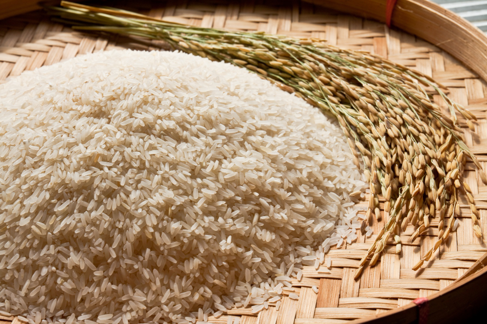
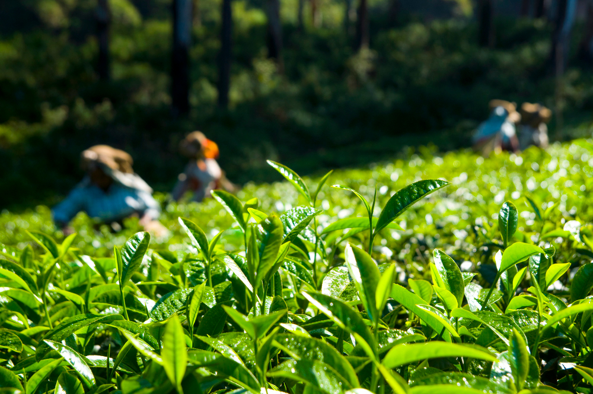

Rice
A staple food for billions, rice is a versatile grain used in various cuisines, often served with vegetables or meats
$ 20 $ 18

Tea
A popular beverage made from the leaves of the Camellia sinensis plant, tea comes in types like black and green, offering various flavors and health benefits
Up to 55% off
$ 20 $ 18

Dal
Dal consists of dried pulses, like lentils and beans, cooked into a thick stew. It’s a protein-rich staple in Indian cuisine, often served with rice or bread.
$ 30 $ 27